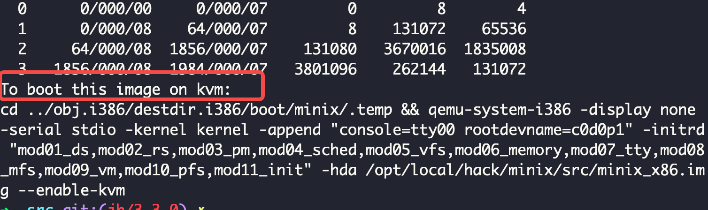
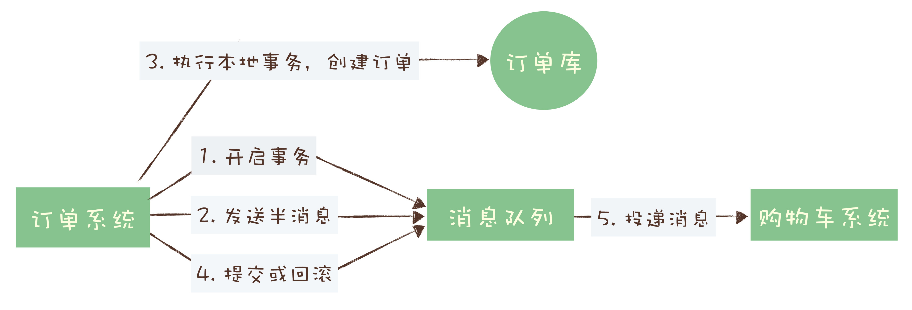
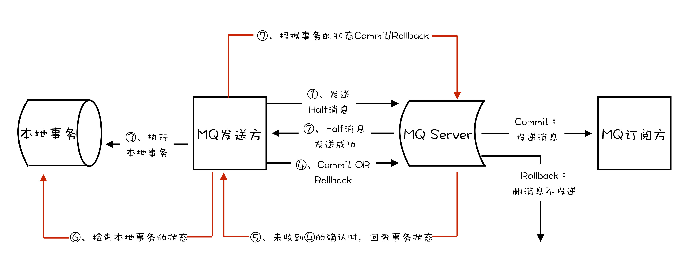
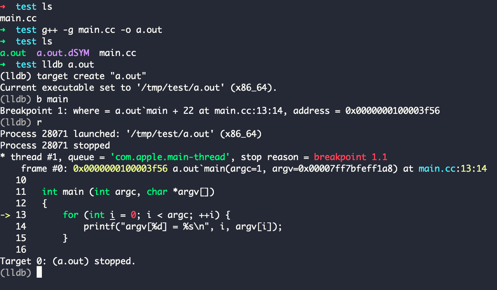
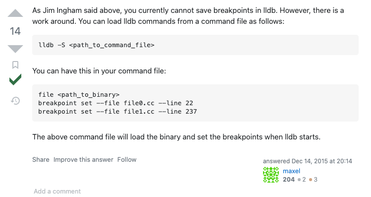
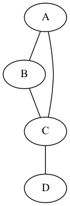
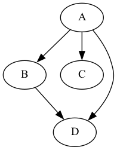
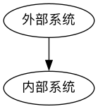
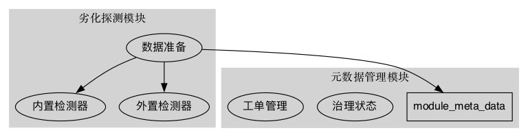

技术文档汇总
Table of Contents
- 1. 学习计划
- 2. 编程工具
- 3. 研发效率
- 4. 后端研发
- 5. 系统运维
- 6. 前端研发
- 7. 日常使用
1. 学习计划
1.1. 操作系统
1.1.1. 制作操作系统资源
1.1.3. 实模式
- 寄存器
分类 名称 全称 通用寄存器 AX Accumulator 通用寄存器 BX Base 通用寄存器 CX Counter 通用寄存器 DX Data 指针寄存器 SP Stack Pointer 指针寄存器 BP Base Pointer 变地址寄存器 SI Source Index 变地址寄存器 DI Destination Index 控制寄存器 IP Instruction Pointer 控制寄存器 FLAG Flag 段寄存器 CS Code Segment 段寄存器 DS Data Segment 段寄存器 SS Stack Segment 段寄存器 ES Extra Segment - 栈 bp, sp
- sp 指向栈的顶端 stack pointer
- bp 指向栈的基地址 base pointer
- push 操作时, sp = sp - 2, bp 不变
- pop 操作时, sp = sp + 2, bp 不变
.code16 ; 16 bits mode ;;; 初始化栈指针 mov bp, 0x8000 mov sp, bp ; sp = bp 时, 栈为空 ;;; 压入 3 个测试数据 ;;; sp = 0x8000, bp = 0x8000 push 'A' ;;; sp = 0x7ffe, bp = 0x8000 push 'B' ;;; sp = 0x7ffc, bp = 0x8000 push 'C' ;;; 查看数据 mov bx, bp mov al, [bx-2] int 0x10 ; 打印 A mov bx, spp mov al, [bx] int 0x10 ; 打印 C ;;; 弹出数据 pop bx ;;; sp = 0x7ffc, bp = 0x8000 mov al, bl int 0x10 ; 打印 C pop bx ;;; sp = 0x7ffe, bp = 0x8000 mov al, bl int 0x10 ; 打印 B pop bx ;;; sp = 0x8000, bp = 0x8000 mov al, bl int 0x10 ; 打印 A
- 中断
BIOS 通过中断提供一下操作硬件的基本程序，具体中断参考手册见 link
- 分支
jmp $, $ 表示当前标号, 该指令会死循环通常汇编的跳转通过
cmp,je,jmp等指令配合实现，例如cmp ax, 4 ; if ax = 4 je ax_is_four ; do something (by jumping to that label) jmp else ; else, do another thing jmp endif ; finally, resume the normal flow ax_is_four: ..... jmp endif else: ..... jmp endif ; not actually necessary but printed here for completeness endif:
函数调用也属于简单的跳转指令, 例如
mov al, 'X' jmp print endprint: print: mov ah, 0x0e ; tty code int 0x10 ; 打印 al 的字符 jmp endprint ; 返回
由于函数调用非常常见, 会有一些指令来简化函数调用实现过程
mov al, 'X' call print print: mov ah, 0x0e ; tty code int 0x10 ; 打印 al 的字符 ret
- 分段
8086 寄存器是 16 位的, 真实地址 = 段地址 << 4 + address
;;; 设置 ds 段寄存器 mov bx, 0x7c0 mov ds, bx ;;; 默认使用 ds 段寄存器作为基地址 mov al, [msg] int 0x10 ;;; 使用 es 段寄存器进行寻址 mov bx, 0x7c0 mov es, bx mov al, [es:the_secret] int 0x10
- 磁盘
磁盘加载数据到内存采用 CHS 的寻址方式 (cylinder-head-sector), 读取磁盘的指令需要 将
al设置成0x02, 通过寄存器传入起始 CHS 地址和需要读取到的扇区数量，然后 调用中断int 0x13, 其中详细的中断参数见 linkAH = 02 读取操作的编码 AL = number of sectors to read (1-128 dec.) CH = track/cylinder number (0-1023 dec., see below) CL = sector number (1-17 dec.) DH = head number (0-15 dec.) DL = drive number (0=A:, 1=2nd floppy, 80h=drive 0, 81h=drive 1) ES:BX = pointer to buffer 数据装载的内存起始地址 on return: AH = status (see INT 13,STATUS) AL = number of sectors read CF = 0 if successful = 1 if error - BIOS disk reads should be retried at least three times and the controller should be reset upon error detection - be sure ES:BX does not cross a 64K segment boundary or a DMA boundary error will occur - many programming references list only floppy disk register values - only the disk number is checked for validity - the parameters in CX change depending on the number of cylinders; the track/cylinder number is a 10 bit value taken from the 2 high order bits of CL and the 8 bits in CH (low order 8 bits of track): |F|E|D|C|B|A|9|8|7|6|5-0| CX | | | | | | | | | | `----- sector number | | | | | | | | `--------- high order 2 bits of track/cylinder `------------------------ low order 8 bits of track/cyl number
carry bit是用来记录操作是否溢出，例如mov ax, 0xFFFF add ax, 1 ; ax = 0x0000 and carry = 1, 设置了溢出位 jc label ; 如果溢出位设置了则跳转
加载磁盘数据的汇编代码
; load 'dh' sectors from drive 'dl' into ES:BX disk_load: pusha ; reading from disk requires setting specific values in all registers ; so we will overwrite our input parameters from 'dx'. Let's save it ; to the stack for later use. push dx mov ah, 0x02 ; ah <- int 0x13 function. 0x02 = 'read' mov al, dh ; al <- number of sectors to read (0x01 .. 0x80) mov cl, 0x02 ; cl <- sector (0x01 .. 0x11) ; 0x01 is our boot sector, 0x02 is the first 'available' sector mov ch, 0x00 ; ch <- cylinder (0x0 .. 0x3FF, upper 2 bits in 'cl') ; dl <- drive number. Our caller sets it as a parameter and gets it from BIOS ; (0 = floppy, 1 = floppy2, 0x80 = hdd, 0x81 = hdd2) mov dh, 0x00 ; dh <- head number (0x0 .. 0xF) ; [es:bx] <- pointer to buffer where the data will be stored ; caller sets it up for us, and it is actually the standard location for int 13h int 0x13 ; BIOS interrupt jc disk_error ; if error (stored in the carry bit) pop dx cmp al, dh ; BIOS also sets 'al' to the # of sectors read. Compare it. jne sectors_error popa ret disk_error: mov bx, DISK_ERROR call print call print_nl mov dh, ah ; ah = error code, dl = disk drive that dropped the error call print_hex ; check out the code at http://stanislavs.org/helppc/int_13-1.html jmp disk_loop sectors_error: mov bx, SECTORS_ERROR call print disk_loop: jmp $ DISK_ERROR: db "Disk read error", 0 SECTORS_ERROR: db "Incorrect number of sectors read", 0
1.1.4. 保护模式
- 保护模式下的字符显示
- 保护模式是 32 位运行的
- 可以直接通过显存写入数据来显示字符
- 显存地址 0xb8000
- 一次显示需要两个参数，低 16 位传入字符, 高 16 位传入显示模式
[bits 32] ; using 32-bit protected mode ; this is how constants are defined VIDEO_MEMORY equ 0xb8000 WHITE_ON_BLACK equ 0x0f ; the color byte for each character print_string_pm: pusha mov edx, VIDEO_MEMORY print_string_pm_loop: mov al, [ebx] ; [ebx] is the address of our character mov ah, WHITE_ON_BLACK cmp al, 0 ; check if end of string je print_string_pm_done mov [edx], ax ; store character + attribute in video memory add ebx, 1 ; next char add edx, 2 ; next video memory position jmp print_string_pm_loop print_string_pm_done: popa ret
- 保护模式下的 GDT
- GDT 主要保护以下信息, 总共 64 位, link
- base = low(16) + middle(8) + high(8)
- limit = low(16) + high(4)
- flags = (12)
- GDT 的第一项必须全是
0x00 - GDT 加载通过
lgdt指令
下面是一个初始化的 gdt 内存定义，这里先将代码段和数据段合并在一起
gdt_start: ; don't remove the labels, they're needed to compute sizes and jumps ; the GDT starts with a null 8-byte dd 0x0 ; 4 byte dd 0x0 ; 4 byte ; GDT for code segment. base = 0x00000000, length = 0xfffff gdt_code: dw 0xffff ; segment length, bits 0-15 | limit_low(16) dw 0x0 ; segment base, bits 0-15 | base_low(16) db 0x0 ; segment base, bits 16-23 | base_middle(8) db 10011010b ; flags (8 bits) | flags1(8) db 11001111b ; flags (4 bits) + segment length, bits 16-19 | limit_high(4), flags2(4) db 0x0 ; segment base, bits 24-31 | base_high(8) gdt_data: dw 0xffff dw 0x0 db 0x0 db 10010010b db 11001111b db 0x0 gdt_end: ; GDT descriptor, via lgdt [gdt_descriptor] gdt_descriptor: dw gdt_end - gdt_start - 1 ; size (16 bit), always one less of its true size dd gdt_start ; address (32 bit) ; define some constants for later use CODE_SEG equ gdt_code - gdt_start DATA_SEG equ gdt_data - gdt_start
- GDT 主要保护以下信息, 总共 64 位, link
- 实模式到 32 位保护模式切换过程
- 关闭中断
- 加载 gdt
- 设置控制寄存器
cr0 - 通过远程调整来 flush 流水线
- 更新所以的段寄存器
- 更新系统栈
- 跳转到 32 位指令出执行
;;; real mode [bits 16] switch_to_pm: cli ; 1. disable interrupts lgdt [gdt_descriptor] ; 2. load the GDT descriptor mov eax, cr0 or eax, 0x1 ; 3. set 32-bit mode bit in cr0 mov cr0, eax jmp CODE_SEG:init_pm ; 4. far jump by using a different segment ;;; protected mode is enabled [bits 32] init_pm: mov ax, DATA_SEG ; 5. update the segment registers mov ds, ax mov ss, ax mov es, ax mov fs, ax mov gs, ax mov ebp, 0x90000 ; 6. update the stack right at the top of the free space mov esp, ebp call BEGIN_PM ; 7. Call a well-known label with useful code
1.1.5. Minix
- 配置环境
下载代码
mkdir minix cd minix git clone git://git.minix3.org/minix src cd src
安装依赖
sudo apt-get install build-essential curl git zlibc zlib1g zlib1g-dev g++编译内存镜像
JOBS=8 ./releasetools/x86_hdimage.sh启动镜像
cd ../obj.i386/destdir.i386/boot/minix/.temp qemu-system-i386 -display none \ -serial stdio \ -kernel kernel \ -append "console=tty00 rootdevname=c0d0p1" \ -initrd "mod01_ds,mod02_rs,mod03_pm,mod04_sched,mod05_vfs,mod06_memory,mod07_tty,mod08_mfs,mod09_vm,mod10_pfs,mod11_init" \ -hda /opt/local/hack/minix/src/minix_x86.img --enable-kvm

- 安装 Minix 操作系统
操作系统安装 link
# 解压 bzip2 -d minix_R3.3.0-588a35b.iso.bz2 # 新建硬盘镜像 qemu-img create minix.img 8G # 安装启动 qemu-system-x86_64 -net user -net nic -m 256 -cdrom minix_R3.3.0-588a35b.iso -hda minix.img -boot d # 启动 qemu-system-x86_64 -net user -net nic -m 256 -hda minix.img
安装后设置 link
hostname minix3 pkgin update pkgin install openssh cp /usr/pkg/etc/rc.d/sshd /etc/rc.d/ printf 'sshd=YES\n' >> /etc/rc.conf /etc/rc.d/sshd start
1.1.6. 实验环境准备
AUR 编译说明文档 link
# clone build repository git clone https://aur.archlinux.org/i386-elf-binutils.git # make binary package makepkg -s # install package sudo pacman -U i386-elf-binutils-2.40-1-x86_64.pkg.tar.zst
c 语言交叉编译
# 交叉编译, -ffreestanding 不需要标准库支持，生成目标是一个独立环境 i386-elf-gcc -ffreestanding -c function.c -o function.o # 反汇编 i386-elf-objdump -d function.o # 链接, -Ttext 0x0 表示代码段的起始地址 i386-elf-ld -o function.bin -Ttext 0x0 --oformat binary function.o # 反汇编测试生成的二进制文件 ndisasm -b 32 function.bin
gdb 调试内核
# -s 让 qemu 停止并监听 1234 端口等待调试 qemu-system-i386 -s -fda os-image.bin & # 创建连接符号文件 i386-elf-ld -o kernel.elf -Ttext 0x1000 kernel.o obj1.o obj2.o # gdb 执行命令进行调试 i386-elf-gdb -ex "target remote localhost:1234" -ex "symbol-file kernel.elf"
1.1.7. 自制操作系统
- nasm 手册 link
1.2. Linux
1.2.1. Linux 资源链接
1.2.2. 编译内核示例
一些依赖安装
sudo apt install ncurses-dev flex bison libelf-dev libssl-dev dwarves
- 定制内核 CentOS Wiki
# 下载源码 wget -c https://mirrors.tuna.tsinghua.edu.cn/kernel/v5.x/linux-5.15.115.tar.gz tar xvzf linux-5.15.115.tar.gz cd linux-5.15.115 # 准备配置文件 cp /boot/config-`uname -r` .config # 开启或关闭配置选项 make menuconfig # 确保 CONFIG_SYSTEM_TRUSTED_KEYS 为空 # cat .config | grep CONFIG_SYSTEM_TRUSTED_KEYS # CONFIG_SYSTEM_TRUSTED_KEYS="" # 编译内核 make -j12 # 安装模块 sudo make modules_install # 安装内核 sudo make install # 重启系统, 查看内核是否运行正常 reboot uname -r
修改 grub 代码
# 查看默认的 grub 选项 grub2-editenv list # 更改默认启动选项 grub2-set-default '5.16.0-1.el7.elrepo.x86_64) 7 (Core)'
1.2.3. 编译 Linux 0.11 需要的工具
# as86 ld86 sudo yum install -y dev86 sudo apt install bin86
1.2.4. TODO 内存检测工具 valgrind
1.3. Rust
1.4. 极客时光
1.4.1. 专栏 22 讲通关 Go 语言
1.4.2. 专栏 24 讲吃透分布式数据库
1.4.3. 专栏 消息队列高手课
- 分布式事务
- 订单系统在消息队列上开启一个事务
- 然后订单系统给消息服务器发送一个 半消息
- 这个半消息不是说消息内容不完整，它包含的内容就是完整的消息内容，半消息和普通 消息的唯一区别是，在事务提交之前，对于消费者来说，这个消息是不可见的
- 半消息发送成功后，订单系统就可以执行本地事务

如果 半消息 提交失败，不同队列会有不同处理方式
- Kafka 的解决方案比较简单粗暴，直接抛出异常，让用户自行处理。我们可以在业务代 码中反复重试提交，直到提交成功，或者删除之前创建的订单进行补偿
RocketMQ 中的事务实现中，增加了事务反查的机制来解决事务消息提交失败的问题

为了支撑这个事务反查机制，我们的业务代码需要实现一个反查本地事务状态的接口， 告知 RocketMQ 本地事务是成功还是失败
- 重复消费
在 MQTT 协议中，给出了三种传递消息时能够提供的服务质量标准，这三种服务质量从低到 高依次是：
- At most once: 至多一次。消息在传递时，最多会被送达一次。换一个说法就是，没什 么消息可靠性保证，允许丢消息。一般都是一些对消息可靠性要求不太高的监控场景使 用，比如每分钟上报一次机房温度数据，可以接受数据少量丢失。
- At least once: 至少一次。消息在传递时，至少会被送达一次。也就是说，不允许丢消 息，但是允许有少量重复消息出现。
- Exactly once：恰好一次。消息在传递时，只会被送达一次，不允许丢失也不允许重复， 这个是最高的等级。
用幂等性解决重复消息问题
- 利用数据库的唯一约束实现幂等
- 为更新的数据设置前置条件
- 记录并检查操作
- 消息积压
- 优化消息收发性能，预防消息积压的方法有两种，
- 增加批量或者是增加并发，在发送端这两种方法都可以使用
- 在消费端需要注意的是，增加并发需要同步扩容分区数量，否则是起不到效果的
- 对于系统发生消息积压的情况，需要先解决积压，再分析原因
- 快速解决积压的方法就是通过水平扩容增加 Consumer 的实例数量
- 优化消息收发性能，预防消息积压的方法有两种，
2. 编程工具
2.1. Tool Chain
2.1.1. ohmyzsh
源码安装 ohmyz.sh
git clone https://githubfast.com/ohmyzsh/ohmyzsh.git ./tools/install.sh
一些配置备忘
source ~/code/jeanhwea/dome/env/env.sh
2.1.2. HomeBrew
2.1.3. LSP
Java LSP 服务
# 安装 jdtls git clone https://github.com/eruizc-dev/jdtls-launcher.git ./install.sh # 更新 jdtls jdtls --update jdtls --version # 清理 jdtls 缓存目录 rm -rvf ~/.cache/jdtls-workspace
Python LSP 服务
pip install --user yapf pip install --user "python-lsp-server[yapf]" # 一次安装所有的 LSP 依赖 pip install --user "python-lsp-server[all]" # 文件格式化 pip install --user black pip install --user isort
MacOS 上安装过后出现一些诡异问题, pylsp 命令找不到，发现是 brew install python3 时对应的 bin 文件夹在一个奇怪的位置
$ pylsp zsh: command not found: pylsp $ pip uninstall "python-lsp-server[all]" Found existing installation: python-lsp-server 1.7.4 Uninstalling python-lsp-server-1.7.4: Would remove: /Users/hujinghui/Library/Python/3.11/bin/pylsp /Users/hujinghui/Library/Python/3.11/lib/python/site-packages/pylsp/* /Users/hujinghui/Library/Python/3.11/lib/python/site-packages/python_lsp_server-1.7.4.dist-info/* Proceed (Y/n)? n $ ls /Users/hujinghui/Library/Python/3.11/bin/ autopep8 flake8 get_objgraph isort-identify-imports pydocstyle pylint pylsp symilar yapf epylint get_gprof isort pycodestyle pyflakes pylint-config pyreverse undill yapf-diff $
修改 PATH 解决
export PATH=~/Library/Python/3.11/bin:$PATH
2.2. Cheat Sheets
- cheatsheets.zip
- tldr
2.3. Java
2.3.1. Maven
- 配置国内下载镜像源
~/.m2/settings.xml | link
<servers> <server> <id>nexus</id> <username>user01</username> <password>passwd</password> </server> </servers> <mirrors> <mirror> <id>aliyun</id> <mirrorOf>*</mirrorOf> <name>Aliyun Public Repository</name> <url>https://maven.aliyun.com/repository/public</url> </mirror> </mirrors>
- Nexus 依赖包上传
新建一个
mavenimport.sh脚本放到 repository 文件夹下#!/bin/bash while getopts ":r:u:p:" opt; do case $opt in r) REPO_URL="$OPTARG" ;; u) USERNAME="$OPTARG" ;; p) PASSWORD="$OPTARG" ;; esac done find . -type f \ -not -path '*/\.*' \ -not -path '*/\^archetype\-catalog\.xml*' \ -not -path '*/\maven\-metadata\-local**\.xml' \ -not -path '*/\^maven\-metadata\-deployment*\.xml' \ -exec curl -u $USERNAME:$PASSWORD -X PUT -v -T {} $REPO_URL{} \;
一般需要上传 release 和 snapshot 两个仓库
sh mavenimport.sh -u user -p pass123 -r http://192.168.0.123:8081/repository/maven-releases/ sh mavenimport.sh -u user -p pass123 -r http://192.168.0.123:8081/repository/maven-snapshots/
- 添加本地 JAR 包
在 pom.xml 文件中直接添加引用
<!-- 添加数据库驱动安装包 --> <dependency> <groupId>com.oracle</groupId> <artifactId>ojdbc6</artifactId> <version>11.2.0.4.0</version> <scope>system</scope> <systemPath>${project.basedir}/src/main/resources/lib/ojdbc6.jar</systemPath> </dependency>
- 添加项目过滤
在 pom.xml 文件中开启编译过滤
<build> <resources> <resource> <directory>src/main/resources</directory> <filtering>true</filtering> </resource> </resources> </build>
引用 pom.xml 文件中的配置
spring: application: version: @project.version@
2.3.2. Spring Framework
2.3.3. Spring Boot
2.3.4. Kafka
- 资源链接
- 说明文档 link
- 环境配置
- 官网快速使用手册
# 启动 zk ./bin/zookeeper-server-start.sh config/zookeeper.properties # 启动 kafka ./bin/kafka-server-start.sh config/server.properties # 创建 topic ./bin/kafka-topics.sh --bootstrap-server localhost:9092 --create --topic quickstart-events # 显示 topic 列表 ./bin/kafka-topics.sh --bootstrap-server localhost:9092 --list # 查看指定 topic 状态 ./bin/kafka-topics.sh --bootstrap-server localhost:9092 --describe --topic quickstart-events # 生产者 & 消费者 ./bin/kafka-console-consumer.sh --bootstrap-server localhost:9092 --from-beginning --topic quickstart-events ./bin/kafka-console-producer.sh --bootstrap-server localhost:9092 --topic quickstart-events
配置相关
./bin/kafka-configs.sh --zookeeper localhost:2181 --all
- docker 版本配置
- docker hub
配置文件 docker-compose.yaml
docker-compose up -d
- 源代码
跳过测试编译
./gradlew build -x test
编译发布包
# 编译包 ./gradlew clean releaseTarGz # 编译产物 ls ./core/build/distributions/
- 官网快速使用手册
2.3.6. JVM
2.3.7. Hive
配置 hadoop
export HADOOP_HOME=/opt/local/hack/hadoop-2.6.0 export PATH="$HADOOP_HOME/bin:$HADOOP_HOME/sbin:$PATH" export HIVE_HOME=/opt/local/hack/apache-hive-1.2.2-bin export PATH="$HIVE_HOME/bin:$PATH"
配置 core-site.xml
<configuration> <property> <name>fs.defaultFS</name> <value>hdfs://localhost:9000</value> </property> </configuration>
配置 hdfs-site.xml
<configuration> <property> <name>dfs.replication</name> <value>1</value> </property> <property> <name>dfs.namenode.name.dir</name> <value>/opt/local/hdfs/namenode</value> </property> <property> <name>dfs.datanode.data.dir</name> <value>/opt/local/hdfs/datanode</value> </property> </configuration>
初始化命令
# 格式化 namenode hdfs namenode -format # 启动/关闭 dfs start-dfs.sh stop-dfs.sh
hive 需要有 /tmp, /user/hive/warehouse 目录, 并且配置 g+w 权限
- 配置元数据存放目录 hive.metastore.warehouse.dir
hadoop fs -mkdir /tmp hadoop fs -mkdir -p /user/hive/warehouse hadoop fs -chmod g+w /tmp hadoop fs -chmod g+w /user/hive/warehouse
解决 [ERROR] Terminal initialization failed; falling back to unsupported 问题
export HADOOP_USER_CLASSPATH_FIRST=true
2.3.8. SDK Man
- 官网 link
# 安装 SDK Man curl -s "https://get.sdkman.io" | bash # 安装 JDK sdk list java sdk install java 11.0.19-tem sdk install java 8.0.372-tem sdk install java 17.0.7-tem # 离线安装, 创建 SDK 包为 8.0.191-online sdk install java 8.0.191-online /opt/admin/java export JAVA_HOME=/opt/admin/java # 修改默认 SDK 版本 sdk list java | grep installed sdk default java 11.0.19-zulu # 环境 # 初始化环境, 生成 .sdkmanrc sdk env init # 安装环境 sdk env install # 切换环境 sdk env # 清除环境 sdk env clear # 安装其他 SDK 工具 sdk install gradle sdk install java sdk install hadoop sdk install ant # 强制更新 SDK Man sdk selfupdate force
2.4. Golang
2.4.1. go module 初始化项目
mkdir genco
cd genco
go mod init genco
2.4.2. 使用私有仓库
配置私有仓库环境变量
export GOINSECURE="gitana.jeanhwea.io" export GOPRIVATE="*.jeanhwea.io"
配置 ~/.gitconfig
[url "ssh://git@gitana.jeanhwea.io/"] insteadOf = http://gitana.jeanhwea.io/
获取对应的包
go get gitana.jeanhwea.io/stock/common
2.4.3. 使用本地仓库
参考官网介绍 link
go mod edit -replace=example.com/theirmodule@v0.0.0-unpublished=../theirmodule
或者直接在 go.mod 文件中添加
replace gitana.jeanhwea.io/stock/common => ../common
2.4.4. IDL
2.4.5. hertz
操作手册 hertz
hz new -module github.com/jeanhwea/appname -idl idl/appname.thrift hz update -idl idl/appname.thrift go mod edit -replace github.com/apache/thrift=github.com/apache/thrift@v0.13.0
2.4.6. kitex
Kitex 微服务架构工具 kitex
2.4.7. profile 性能分析
通过如下命令生成分析文件，官网工具介绍 diagnostics
# cpu 性能分析 go test -cpuprofile ./output/cpu.prof -run TestSched01 ./app/sched # 内存 性能分析 go test -memprofile ./output/mem.prof -run TestSched01 ./app/sched # cpu 内存性能分析 go test -cpuprofile ./output/cpu.prof -memprofile ./output/mem.prof -run TestSched01 ./app/sched
使用 go tool 查看文件
go tool pprof ./output/cpu.prof
查看 cpu 性能分析结果
$ go tool pprof ./output/cpu.prof
File: sched.test
Type: cpu
Time: Aug 30, 2023 at 8:51am (CST)
Duration: 201.60ms, Total samples = 70ms (34.72%)
Entering interactive mode (type "help" for commands, "o" for options)
(pprof) top 5
Showing nodes accounting for 70ms, 100% of 70ms total
Showing top 5 nodes out of 32
flat flat% sum% cum cum%
40ms 57.14% 57.14% 40ms 57.14% runtime/internal/syscall.Syscall6
10ms 14.29% 71.43% 10ms 14.29% github.com/sirupsen/logrus.(*TextFormatter).Format
10ms 14.29% 85.71% 10ms 14.29% runtime.heapBitsSetType
10ms 14.29% 100% 10ms 14.29% time.Now
0 0% 100% 60ms 85.71% github.com/sirupsen/logrus.(*Entry).Info
(pprof) top 5 -cum
Showing nodes accounting for 0, 0% of 70ms total
Showing top 5 nodes out of 32
flat flat% sum% cum cum%
0 0% 0% 70ms 100% mtiisl.cn/gitlab/xifei/patok/app/sched.(*Sched).StartSched
0 0% 0% 70ms 100% mtiisl.cn/gitlab/xifei/patok/app/sched.TestSched01
0 0% 0% 70ms 100% testing.tRunner
0 0% 0% 60ms 85.71% github.com/sirupsen/logrus.(*Entry).Info (inline)
0 0% 0% 60ms 85.71% github.com/sirupsen/logrus.(*Entry).Log
(pprof)
查看内存性能分析结果
$ go tool pprof ./output/mem.prof
File: sched.test
Type: alloc_space
Time: Aug 30, 2023 at 8:47am (CST)
Entering interactive mode (type "help" for commands, "o" for options)
(pprof) top
Showing nodes accounting for 3693.94kB, 100% of 3693.94kB total
Showing top 10 nodes out of 29
flat flat% sum% cum cum%
1184.27kB 32.06% 32.06% 1184.27kB 32.06% runtime/pprof.StartCPUProfile
902.59kB 24.43% 56.49% 1485.59kB 40.22% compress/flate.NewWriter (inline)
583.01kB 15.78% 72.28% 583.01kB 15.78% compress/flate.newDeflateFast (inline)
512.07kB 13.86% 86.14% 512.07kB 13.86% fmt.Sprintf
512.01kB 13.86% 100% 512.01kB 13.86% fmt.Sprint
0 0% 100% 583.01kB 15.78% compress/flate.(*compressor).init
0 0% 100% 1485.59kB 40.22% compress/gzip.(*Writer).Write
0 0% 100% 1024.08kB 27.72% github.com/sirupsen/logrus.(*Entry).Info
0 0% 100% 1024.08kB 27.72% github.com/sirupsen/logrus.(*Entry).Log
0 0% 100% 512.07kB 13.86% github.com/sirupsen/logrus.(*Entry).log
(pprof) top -cum
Showing nodes accounting for 2086.86kB, 56.49% of 3693.94kB total
Showing top 10 nodes out of 29
flat flat% sum% cum cum%
902.59kB 24.43% 24.43% 1485.59kB 40.22% compress/flate.NewWriter (inline)
0 0% 24.43% 1485.59kB 40.22% compress/gzip.(*Writer).Write
0 0% 24.43% 1485.59kB 40.22% runtime/pprof.(*profileBuilder).build
0 0% 24.43% 1485.59kB 40.22% runtime/pprof.profileWriter
0 0% 24.43% 1184.27kB 32.06% main.main
0 0% 24.43% 1184.27kB 32.06% runtime.main
1184.27kB 32.06% 56.49% 1184.27kB 32.06% runtime/pprof.StartCPUProfile
0 0% 56.49% 1184.27kB 32.06% testing.(*M).Run
0 0% 56.49% 1184.27kB 32.06% testing.(*M).before
0 0% 56.49% 1184.27kB 32.06% testing/internal/testdeps.TestDeps.StartCPUProfile
(pprof)
产出 PDF 性能分析报告
# 安装图像生成工具 sudo apt install graphviz sudo brew install graphviz # 生成 PDF 报告 go tool pprof --pdf ./output/cpu.prof > cpu.pdf go tool pprof --pdf ./output/mem.prof > mem.pdf
2.4.8. 泛型写法
import ( "sort" ) // ~string 表示底层时 string 类型的集合 func IterMap[K ~string, V any](m map[K]V, fn func(k K, v V)) { keys := make([]string, 0, len(m)) for k := range m { keys = append(keys, string(k)) } sort.Strings(keys) for _, k := range keys { fn(K(k), m[K(k)]) } }
2.4.9. 垃圾回收
通过环境变量来开启打印 gc
GODEBUG='gctrace=1' ./app
日志样例
gc 7 @722.445s 0%: 0.099+2.3+0.017 ms clock, 0.79+0/4.5/0+0.13 ms cpu, 1->1->1 MB, 4 MB goal, 0 MB stacks, 0 MB globals, 8 P GC forced gc 8 @842.465s 0%: 0.084+1.7+0.006 ms clock, 0.67+0/3.3/0+0.049 ms cpu, 1->1->1 MB, 4 MB goal, 0 MB stacks, 0 MB globals, 8 P GC forced gc 9 @962.486s 0%: 0.10+2.3+0.008 ms clock, 0.84+0/4.4/0+0.065 ms cpu, 1->1->1 MB, 4 MB goal, 0 MB stacks, 0 MB globals, 8 P GC forced
2.5. Perl
2.5.1. 环境配置
2.5.2. 基本使用
- Hello world
创建
hello.pl文件写以下代码print("hello world\n");使用 perl 命令运行代码
perl hello.pl
- 过滤 MySQL trace 日志
use strict; use warnings; my $cid = 8; my $fout = "/tmp/mysqld-thd-$cid.txt"; open(FIN, '<:encoding(UTF-8)', "/tmp/mysqld.trace") or die; open(FOUT, '>', $fout) or die; while (my $line = <FIN>) { if ($line =~ /^T\@$cid/) { print FOUT $line; } } close(FOUT); $fout;
2.6. Python
2.6.1. 安装 python 的开发包
pip install --user pandas pip install --user sqlalchemy pip install --user pymysql
源码编译安装
wget -c https://www.python.org/ftp/python/3.11.5/Python-3.11.5.tgz
tar xzvf ~/Python-3.11.5.tgz
sudo yum install openssl openssl-devel
sudo yum install libffi libffi-devel
./configure prefix=/opt/python3
make
sudo make install
配置国内下载源地址 tuna
pip install pip -U -i https://pypi.tuna.tsinghua.edu.cn/simple pip config set global.index-url https://pypi.tuna.tsinghua.edu.cn/simple pip config set install.trusted-host pypi.tuna.tsinghua.edu.cn
2.6.2. pyenv 管理 python 版本
安装如下
git clone https://github.com/pyenv/pyenv.git ~/.pyenv
配置环境变量
export PYTHON_BUILD_MIRROR_URL="https://registry.npmmirror.com/-/binary/python" export PYTHON_BUILD_MIRROR_URL_SKIP_CHECKSUM=1 export PYENV_ROOT="$HOME/.pyenv" command -v pyenv >/dev/null || export PATH="$PYENV_ROOT/bin:$PATH" eval "$(pyenv init -)"
centos7 指定 openssl 安装路径后编译安装 link
CPPFLAGS="$(pkg-config --cflags openssl11)" \ LDFLAGS="$(pkg-config --libs openssl11)" \ pyenv install -v 3.10 pyenv global 3.10
2.7. Ruby
- 配置国内 GEM 镜像 Ruby China
2.8. Rust
2.8.1. 安装配置
安装页面 link
curl --proto '=https' --tlsv1.2 -sSf https://sh.rustup.rs | sh # 安装工具链 rustup component add rust-src
2.8.2. 使用笔记
#![allow(dead_code)] #![allow(unused_variables)]
结构体
struct Point { x: f64, y: f64, } struct Line { beg: Point, end: Point, } impl Line { // 方法 fn len(&self) -> f64 { let dx = self.end.x - self.beg.x; let dy = self.end.y - self.beg.y; (dx * dx + dy * dy).sqrt() } }
匿名函数及闭包
fn use_closure() { let plus_one = |x| -> i32 { x + 1 }; let x = 1; println!("{} + 1 = {}", x, plus_one(x)); }
match 关键字
fn match_statement(x: i32) -> &'static str { return match x { 8 => "China", 1..=10 => "VALID", _ => "INVALID", }; }
使用 trait
trait Animal { fn name(&self) -> &'static str; fn talk(&self) { println!("{} cannot talk!", self.name()); } } struct Cat { name: &'static str, } struct Human { name: &'static str, } impl Animal for Cat { fn name(&self) -> &'static str { self.name } } impl Animal for Human { fn name(&self) -> &'static str { self.name } fn talk(&self) { println!("{} says hello.", self.name()); } } fn use_trait() { let john = Human { name: "John" }; john.talk(); let pet = Cat { name: "MiMi" }; pet.talk(); }
2.8.3. cargo
创建项目
cargo new myapp cargo new --lib mylib
添加包
cargo add config cargo add clap --features derive
编译运行
cargo build cargo build --release cargo run -- -h
2.9. GDB & LLDB
2.9.1. 参考资料及链接
2.9.2. TUI
- 开启汇编窗口 layout asm
- 开启寄存器窗口 layout regs
- 布局循环 layout next/prev
- 打印 32 个汇编指令 x/32i $pc
2.9.3. 进程启动: run & attach
直接在命令行参数 attach 进程
gdb -p pid
方法一：使用 attach 模式调试。首先正常启动重新，然后使用 attach 命令附属到进程上
(lldb) attach -p 18616 (gdb) attach 18616
方法二：直接 run 启动进程
# 指定启动文件 (lldb/gdb) file <binary> # 直接 run 启动进程 (lldb/gdb) r # 添加启动参数 (lldb/gdb) r args1 args2 ... # 查看参数 (gdb) show args (lldb) settings show target.run-args

2.9.4. 调试流程控制
- 设置断点 breakpoint
# 普通断点 b main b main.cc:12 b 12 # 条件断点 (gdb) b 34 if i = 10 (gdb) break foo if strcmp(y,"hello") == 0 (lldb) breakpoint set --name foo --condition '(int)strcmp(y,"hello") == 0' (lldb) br s -n foo -c '(int)strcmp(y,"hello") == 0' (lldb) br s -n read_page -c 'm_page_id.space()==56' # 临时断点: 临时断点执行一次后自动销毁 tb main
启用/禁用断点 disable/enable
(gdb) info b Num Type Disp Enb Address What 1 breakpoint keep y 0x000000000331276b in dispatch_command(THD*, COM_DATA const*, enum_server_command) (gdb) dis 1 # 禁用断点 (gdb) info b Num Type Disp Enb Address What 1 breakpoint keep n 0x000000000331276b in dispatch_command(THD*, COM_DATA const*, enum_server_command) (gdb) ena 1 # 启用断点 (gdb) i b Num Type Disp Enb Address What 1 breakpoint keep y 0x000000000331276b in dispatch_command(THD*, COM_DATA const*, enum_server_command)
- 流程控制 step & next & continue
- step 单步调试，不进入函数
- next 单步调试，进入函数
continue 继续执行
s # step n # next c # continue # until 直接执行到行数 (gdb) until 12 (lldb) thread until 12
- 跳转到指定行
- 条件断点
tbtemp breakpoint - until
until <line>
- 条件断点
返回当前值
(gdb) return <return expression> (lldb) thread return <return expression>
2.9.5. 保持断点 & 现场恢复
GDB 保存断点的方式比较方便，直接保持成一个文本文件后，再应用代码
# 保持断点到文件中 (gdb) save breakpoint mybreak.txt # 重新加载保存的断点 (gdb) source mybreak.txt
LLDB 保存断点也有类似的命令，但是保存结果是一个 JSON
# 保存断点到 json 格式文件 (lldb) breakpoint write -f dbg001 # 读取断点到 json 格式文件 (lldb) breakpoint read -f dbg001
也可以参考这个答案优化流程 SO

2.9.6. 查看/修改变量和内存数据
打印变量 print / x-command
(lldb) p thd->m_thread_id (my_thread_id) $1 = 10 (lldb) x/w &$1 0x7fbdc1240188: 0x0000000a (lldb)
- o octal
- x hexadecimal
- d decimal
- u unsigned decimal
- t binary
- f floating point
- a address
- c char
- s string
- i instruction
- b byte
- h halfword (16-bit value)
- w word (32-bit value)
- g giant word (64-bit value)
查看内存地址中的数据
(lldb) x/8w $0 => 打印地址的数据, 打印 8 条数据, [w, b] 表示不同的打印方式 0x7fbdc123dc00: 0x0916f4d8 0x00000001 0x0916f548 0x00000001 0x7fbdc123dc10: 0x00000000 0x00000000 0xc1240440 0x00007fbd (lldb) x/8b $0 0x7fbdc123dc00: 0xd8 0xf4 0x16 0x09 0x01 0x00 0x00 0x00 (lldb) x/8x $0 0x7fbdc123dc00: 0xd8 0xf4 0x16 0x09 0x01 0x00 0x00 0x00
查看 frame 中变量
# 查看局部变量 (lldb) frame variable (lldb) fr v # 查看全局变量 (lldb) target variable (lldb) ta v # 查看调用栈 thread backtrace (lldb/gdb) bt
2.9.7. 调试时显示下一条汇编
开启显示下一条汇编
set disassemble-next-line on
查看是否开启成功
show disassemble-next-line
2.9.8. 命令行启动时执行命令 -ex
gdb -ex "target remote :1234" -ex "b *0x7c00" -ex "c"
2.10. Git
- taobao git 下载 git-for-windows
- taobao 二进制下载 taobao binary
github 加速
# ~/.gitconfig [url "https://githubfast.com/"] insteadOf = https://github.com/
2.10.1. 配置用户信息
git config --global user.email "hujinghui@buaa.edu.cn" git config --global user.name "Jinghui Hu"
2.10.2. 递归克隆子模块
git clone --recurse-submodules url
2.10.3. 忽略换行符 ^M
git config core.autocrlf true
2.10.4. 代码发布相关
# 动态生成标签 git describe --tags --always --dirty='-dev' # 创建代码包 git archive -o output.tgz HEAD
2.10.5. 添加添加生成 TAGS 的 git-hooks
cp .git/hooks/pre-commit.sample .git/hooks/pre-commit echo 'ctags -e -R . >/dev/null 2>&1 &' > .git/hooks/pre-commit
2.11. SSH
2.11.1. ~/.ssh/config
创建配置文件
touch ~/.ssh/config chmod 600 ~/.ssh/config
查看配置文件
man ssh_config 5
基本配置
- ServerAliveInterval 心跳时间
Host *
ServerAliveInterval 0
解决 ssh 一段时间后自动断线
Host *
ServerAliveInterval 60
ServerAliveCountMax 1
2.11.2. 配置 host 别名
在配置文件 ~/.ssh/config 方便后续直接在 ssh 命令中使用
Host gitana
Hostname gitana.jeanhwea.io
Port 2222
User admin
# match 123, 212 etc
Host 1?? 2??
Hostname 192.168.0.%h
Port 22
User admin
# match all
Host *
Hostname 192.168.0.%h
Port 22
User admin
2.11.3. 直接转发远端流量
通过 sshconfig 的配置来转发远端 5432
Host db
HostName db.example.com
LocalForward 5433 localhost:5432
登录到远端, 然后就可以在本地连接
- -f 后台运行命令
- -C 传输启用压缩
- -N 不登录主机
ssh -fCN db psql -h localhost -p 5433 orders
2.11.4. 暴露本机服务配置, 两跳登录
Host hoppin
Hostname remote-server
Port 22
User root
RemoteForward 2222 localhost:22
两跳登录配置
Host gitana
Hostname 127.0.0.1
Port 2222
User admin
IdentityFile ~/.ssh/id_rsa
ProxyCommand ssh -W %h:%p proxy-host
使用 ProxyJump 实现两条登录
Host target
Hostname target-server
User admin
ProxyJump proxy-server
2.11.5. 代理登录
添加代理登录的配置, 需要通过 ProxyCommand 来设置代理命令
Host gateway
HostName proxy.example.com
User root
Host db
HostName db.internal.example.com # 目标服务器地址
User root # 用户名
# IdentityFile ~/.ssh/id_ecdsa # 认证文件
ProxyCommand ssh gateway netcat -q 600 %h %p # 代理命令
2.11.6. 连接 socket 重用
Host example.org ControlMaster auto ControlPath ~/.ssh/cp-%r@%h:%p.sock ControlPersist yes
2.11.7. forward 端口转发
本地转发
# -N 不执行命令, -L local 转发 <remote-port>:<local-host>:<local-port> ssh -N -L 9092:127.0.0.1:9092 user@host
远端转发
# -N 不执行命令, -R remote 转发 <local-port>:<remote-host>:<remote-port> ssh -N -R 9092:127.0.0.1:9092 user@host
2.11.8. ssh 双跳登录
ssh -p9998 -i ~/.ssh/id_s1 user1@175.0.0.20 -t ssh -p9999 -i ~/.ssh/id_s2 user2@213.0.0.30
2.11.9. scp 双跳传输
scp -o ProxyCommand="ssh -p9998 user1@175.0.0.20 nc 213.0.0.30 9999" \ -o IdentityFile="~/.ssh/id_s2" /opt/file user2@213.0.0.30:/tmp/file
2.12. Shell
2.12.1. 后台运行命令 cmd
nohup cmd >/dev/null 2>&1 &
2.12.2. 比较 semver 版本号
vge() { local v1=$1 local v2=$2 local small=$(printf "%s\n", $1, $2 | sort -V | head -n 1) if [ "$v1" == "$small" ]; then echo "true" else echo "false" fi }
2.12.3. heredoc 定义变量
read -d '' TEXT <<EOF this is a multiple line text EOF echo $TEXT
2.12.4. 检测命令返回值是否正确
# run a command or ./run.sh if [ "$?" != "0" ]; then exit $? fi
2.12.5. 检测当前是否 root 用户
if [ $UID -ne 0 ]; then echo "permission deny, sudo ..." exit 13 # EACCES fi
2.12.6. 临时提权设置目录权限
echo 'password' | sudo -S chmod -R a+rX dist
3. 研发效率
3.1. 交叉编译环境配置
安装前置依赖项目
yum install -y texinfo
下载所需的依赖
# 下载所需的安装包 wget -c https://mirrors.tuna.tsinghua.edu.cn/gnu/gcc/gcc-11.4.0/gcc-11.4.0.tar.gz wget -c https://mirrors.tuna.tsinghua.edu.cn/gnu/binutils/binutils-2.40.tar.gz wget -c https://mirrors.tuna.tsinghua.edu.cn/gnu/gdb/gdb-11.2.tar.gz tar xzvf binutils-2.40.tar.gz tar xzvf gcc-11.4.0.tar.gz tar xzvf gdb-11.2.tar.gz # gcc 需要依赖 gmp mpfr libmpc 库, 可以直接使用 gcc 里面的辅助脚本下载 cd gcc-11.4.0 ./contrib/download_prerequisites
保存脚本开始编译
export PREFIX="/opt/i386-elf-toolchain" export TARGET=i386-elf export PATH="$PREFIX/bin:$PATH" DIR=$PWD # rm -rf $DIR/build-binutils mkdir -p $DIR/build-binutils cd $DIR/build-binutils ../binutils-2.40/configure --target=$TARGET --prefix=$PREFIX --enable-interwork --enable-multilib --disable-nls --disable-werror |& tee configure.log make all -j4 |& tee make.log sudo make install |& tee install.log # rm -rf $DIR/build-gcc mkdir -p $DIR/build-gcc cd $DIR/build-gcc ../gcc-11.4.0/configure --target=$TARGET --prefix=$PREFIX --disable-nls --disable-libssp --enable-languages=c --without-headers |& tee configure.log make all-gcc -j4 |& tee make-all-gcc.log make all-target-libgcc -j4 |& tee make-all-target-libgcc.log sudo make install-gcc |& tee make-install-gcc.log sudo make install-target-libgcc |& tee make-install-target-libgcc.log # rm -rf $DIR/build-gdb mkdir -p $DIR/build-gdb cd $DIR/build-gdb ../gdb-11.2/configure --target=$TARGET --prefix=$PREFIX --program-prefix=i386-elf- make -j4 |& tee make.log sudo make install |& tee install.log
3.2. Tmux 管理终端会话
基本配置 ~/.tmux.conf
set -g mouse on set -g default-terminal "xterm-256color" set -g escape-time 0
使用 Ctrl-b : 可以进入命令模式执行命令
使用 Ctrl-b ? 可以进入查看快捷键绑定
3.3. 处理 json 字符串
- fromjson 字符串 => 对象
- tojson 对象 => 字符串
cat a.json | jq '.str | fromjson | .[0] | tojson'
unqoute string, jq 使用 -r 选项可以去掉字符串中的双引号, link
echo '{"a": "val01", "b": 1}' | jq '.a'
echo '{"a": "val01", "b": 1}' | jq -r '.a'
3.4. qemu
- qemu 使用示例教程 link
安装 qemu
apt install -y qemu-system
创建硬盘镜像文件
qemu-img create myvm.qcow2 16G
安装 minix 系统
qemu-system-x86_64 -boot d -cdrom minix_R3.3.0-588a35b.iso -m 1024 -hda myvm.qcow2 # Ctrl-A x 退出 QEMU 界面 qemu-system-x86_64 -nographic -boot d -cdrom minix_R3.3.0-588a35b.iso -m 1024 -hda myvm.qcow2
3.5. bochs
3.5.1. bochs 安装及配置
源码编译安装 OSDev link | Github | bochs 2.7 官方编译手册 Compiling Bochs | build on macosx
ubuntu 下编译
wget -c https://jaist.dl.sourceforge.net/project/bochs/bochs/2.7/bochs-2.7.tar.gz sudo apt-get install libsdl2-dev ./configure --prefix=/opt/bochs \ --enable-smp \ --enable-cpu-level=6 \ --enable-all-optimizations \ --enable-x86-64 \ --enable-pci \ --enable-vmx \ --enable-debugger \ --enable-debugger-gui \ --enable-logging \ --enable-fpu \ --enable-3dnow \ --enable-sb16=dummy \ --enable-ne2000 \ --enable-cdrom \ --enable-x86-debugger \ --enable-iodebug \ --disable-plugins \ --disable-docbook \ --with-x --with-x11 --with-term make sudo make install
macos 下编译
wget -c https://jaist.dl.sourceforge.net/project/bochs/bochs/2.7/bochs-2.7.tar.gz brew install sdl2 ./configure --prefix=/opt/bochs \ --enable-smp \ --enable-cpu-level=6 \ --enable-all-optimizations \ --enable-x86-64 \ --enable-pci \ --enable-vmx \ --enable-debugger \ --enable-debugger-gui \ --enable-logging \ --enable-fpu \ --enable-3dnow \ --enable-sb16=dummy \ --enable-cdrom \ --enable-x86-debugger \ --enable-iodebug \ --disable-plugins \ --disable-docbook \ --with-term --with-sdl2 make sudo make install
添加共享配置
export BXSHARE="/opt/bochs/share/bochs"
bochsrc 配置文件, 设置启动未 1.44 存软盘, 启动镜像名称为 Image
boot: floppy floppy_bootsig_check: disabled=0 floppya: 1_44=Image, status=inserted
全部的配置文件参考如下说明
vim /opt/bochs/share/doc/bochs/bochsrc-sample.txt
3.5.2. 开启图形调试器
修改配置文件 bochsrc.bxrc
# Linux display_library: x, options="gui_debug" # Windows display_library: win32, options="gui_debug"
3.5.3. 提取系统文件
[/root]# mdir b:
Volume in drive B has no label
Directory for B:/
FIND-3X2 TAZ 218243 2-24-105 2:49p
COMPRESS 74756 2-27-105 2:54p
BOOT S 335 2-27-105 3:20p
PS012 TAZ 75393 2-28-105 10:15p
HELLO C 74 7-23-123 12:18a
5 File(s) 1086976 bytes free
[/root]# mcopy hello.c b:
File "HELLO.C" exists, overwrite (y/n) ? y
Copying HELLO.C
[/root]#
挂载文件镜像
sudo mount -t msdos -o loop diskb.img /mnt sudo mount -t minix -o loop rootimage-hd.img /mnt
3.6. pandoc 文档格式转换
pandoc --pdf-engine=xelatex \ --toc --number-sections \ -V date="$(date +'%Y-%m-%d %H:%M:%S')" \ -V author="Jinghui Hu" \ -V mainfont="SimSun" \ -V documentclass=ctexart \ -V geometry:margin='1in' \ -o tech.pdf tech.org
4. 后端研发
4.1. Oracle
4.1.1. 参考资料
- Oracle 关系数据库 参考链接
4.1.2. 开发环境配置
- CentOS 7 镜像启动
- docker container
启动 centos7 镜像
docker run -d -it --restart always \ -v ~/srv/pence/data:/data \ --hostname pence --name pence centos:7
重新进入进行容器
docker exec -it pence bash
删除容器
docker rm -f pence
- 配置主机开发环境
安装一波系统依赖库
yum update # common tools yum install -y net-tools vim tmux tree kernel-devel kernel-doc kernel-headers \ samba samba-client ntp rsync curl git # for oracle 11g install yum install -y binutils compat-libcap1 compat-libstdc++-33 gcc gcc-c++ glibc \ glibc-devel ksh libgcc libstdc++ libstdc++-devel libaio libaio-devel libXi \ libXtst make sysstat unixODBC unixODBC-devel oracleasm-support yum install -y gcc gcc-c++ cmake automake zip unzip python3 python3-devel \ python-devel python rpm-build redhat-rpm-config asciidoc hmaccalc \ perl-ExtUtils-Embed pesign xmlto audit-libs-devel binutils-devel \ elfutils-devel elfutils-libelf-devel ncurses-devel bison-devel newt-devel \ numactl-devel pciutils-devel python-devel zlib-devel readline-devel # for mysql yum install -y cmake ncurses ncurses-devel bison bison-devel openssl openssl-devel # for openGauss yum install -y libaio-devel flex bison bison-devel ncurses-devel glibc-devel \ patch redhat-lsb-core readline-devel
- 设置时区
cp /usr/share/zoneinfo/Asia/Shanghai /etc/localtime
- 安装数据库的前置准备
- 安装 Oracle 11g
- 配置系统内存以及 swap
4.2. MySQL
4.2.1. 参考资料
- MySQL 开发文档 8.0.30 Source Code Documents
- MySQL 使用文档 InnoDB Storage Engine
- 专栏 MySQL 实战 45 讲
- 三方库 GORM | JPA | mybatis-3
4.2.2. 主从架构实验环境
- 配置 Docker 环境
- 安装 Docker Server
- 参考文档 Install the Compose standalone 安装 docker-compose
- 编写启动配置文件 MySQL 主备配置
- docker hub mysql 镜像
- 启动服务
docker-compose up -d
- 配置主备环境
- 查看主备网络配置
docker inspect mysql-master | jq '.[0].NetworkSettings.Networks.dbnet.IPAddress' docker inspect mysql-slave | jq '.[0].NetworkSettings.Networks.dbnet.IPAddress'
查看主机网络
docker network ls
- 主库配置备库用户的访问权限
create user "user02"@"%" identified by "user02"; grant replication slave on *.* to "user02"@"%"; flush privileges;
show master status
- 备库同步配置
# 这里的 host 等参数需要根据主库的配置修改 -- change master to master_host='172.20.0.100', master_user='user02', master_password='user02', master_log_file='1.000003', master_log_pos=823; -- change master to master_host='mysql-master', master_user='user02', master_password='user02', master_log_file='mysql-bin.000003', master_log_pos=0; change master to master_host='mysql-master', master_user='user02', master_password='user02', master_log_file='mysql-bin.000003', master_log_pos=841;
start slave;show slave status\G
如果出现这样的两行表示结果是正确的
SlaveIORunning: Yes SlaveSQLRunning: Yes
重置 slave
stop slave; reset slave;
- 主库建表
create table t ( id int primary key auto_increment, c int );
insert into t(c) values (1), (2), (3);
delete from t where id < 10;
- 备库查询
select * from t;
- 查看主备网络配置
- 设置登录别名
alias my1="MYSQL_PWD=p111 mysql -h127.0.0.1 -uroot -P9001" alias my2="MYSQL_PWD=p222 mysql -h127.0.0.1 -uroot -P9002" alias u01="MYSQL_PWD=user01 mysql -h127.0.0.1 -uuser01 -P9001 test01" alias u02="MYSQL_PWD=user02 mysql -h127.0.0.1 -uuser02 -P9002 test01" alias m100='docker exec -it mysql-master /bin/bash' alias m101='docker exec -it mysql-slave /bin/bash'
4.2.3. 运维主题
- 创建用户 & 授权访问数据库
create user 'jeffrey'@'%' identified by 'hello'; grant all privileges on employees.* to 'jeffrey'@'%'; flush privileges;
- 查看当前用户权限
select user, host from mysql.user;
- 修改用户密码
use mysql; set password for 'jeffrey'@'%' = password('root'); update user set password = password('new.password') where user = 'jeffrey' and host = '%'; update user set host = '%' where user = 'root'; flush privileges; alter user 'jeffrey'@'%' identified by 'mypass';
- 重建表
InnoDB 不支持直接优化表
mysql> optimize table price_daily; +-----------------------------+----------+----------+-------------------------------------------------------------------+ | Table | Op | Msg_type | Msg_text | +-----------------------------+----------+----------+-------------------------------------------------------------------+ | prod_alpen_dict.price_daily | optimize | note | Table does not support optimize, doing recreate + analyze instead | | prod_alpen_dict.price_daily | optimize | status | OK | +-----------------------------+----------+----------+-------------------------------------------------------------------+
InnoDB 需要重建后分析来优化表，对应 SQL 如下
-- recreate alter table price_daily engine=innodb; -- analyze analyze table price_daily;
mysql> alter table price_daily engine=innodb; Query OK, 0 rows affected (3 min 2.06 sec) Records: 0 Duplicates: 0 Warnings: 0 mysql> analyze table price_daily; +-----------------------------+---------+----------+----------+ | Table | Op | Msg_type | Msg_text | +-----------------------------+---------+----------+----------+ | prod_alpen_dict.price_daily | analyze | status | OK | +-----------------------------+---------+----------+----------+ 1 row in set (0.04 sec)
- 高可用部署方案
- 全同步复制 5.7.17 后版本
- GTID 模式下运行
- 日志为 row 格式
- MGR
- 基于 raft 算法自动选主
- 保证 N/2 + 1 节点可用
- 基于 MySQL 插件实现，部分方便
- 全同步复制 5.7.17 后版本
4.2.4. 源码研究
- 安装编译调试环境
系统依赖安装
# 安装依赖包 yum update yum install -y net-tools vim tmux tree kernel-devel kernel-doc kernel-headers \ samba samba-client ntp rsync curl git wget yum install -y binutils compat-libcap1 compat-libstdc++-33 gcc gcc-c++ glibc \ glibc-devel ksh libgcc libstdc++ libstdc++-devel libaio libaio-devel libXi \ libXtst make sysstat unixODBC unixODBC-devel oracleasm-support zip unzip \ python-devel python rpm-build redhat-rpm-config asciidoc hmaccalc \ perl-ExtUtils-Embed pesign xmlto audit-libs-devel binutils-devel \ elfutils-devel elfutils-libelf-devel ncurses-devel bison-devel newt-devel \ python3 python3-devel \ numactl-devel pciutils-devel python-devel zlib-devel readline-devel
-
# gcc wget https://mirrors.tuna.tsinghua.edu.cn/gnu/gcc/gcc-12.1.0/gcc-12.1.0.tar.gz # 下载 gcc 的依赖 ./contrib/download_prerequisites # --enable-multilib 开启 32 位库支持 ./configure --prefix=/usr/local/gcc --disable-multilib make make install # gdb wget https://mirrors.tuna.tsinghua.edu.cn/gnu/gdb/gdb-12.1.tar.gz ./configure --prefix=/usr/local/gdb make make install
添加环境变量
export PATH=/usr/local/gcc/bin:$PATH export LD_LIBRARY_PATH=/usr/local/gcc/lib64:$LD_LIBRARY_PATH export PATH=/usr/local/gdb/bin:$PATH
cmake 安装 CMake Install
# 下载代码 curl -OL https://github.com/Kitware/CMake/releases/download/v3.25.2/cmake-3.25.2.tar.gz # 编译安装 ./bootstrap --prefix=/usr/local/cmake make make install
添加环境变量
export PATH=/usr/local/cmake/bin:$PATH
boost 下载并安装
wget -c https://boostorg.jfrog.io/artifactory/main/release/1.77.0/source/boost_1_77_0.tar.bz2 tar xjvf boost_1_77_0.tar.bz2
- 编译代码及初始数据库
- 参考资料 源代码安装文档 | TRACE 文件 | –gdb | The Optimizer Trace
配置文件
/etc/my.cnf# -*- mode: conf; -*- [mysqld] basedir=/opt/local/mysql datadir=/opt/local/mysql/data log-error=/tmp/mysql-error.log pid-file=/tmp/mysql.pid # debug=d,info,error,query,general,where:O,/tmp/mysqld.trace # debug=+d,info,error,query,general,enter,where:O,/tmp/mysqld.trace debug # autocommit=0 innodb_lock_wait_timeout=3600 # long_query_time = 0 slow_query_log = on slow_query_log_file = /tmp/mysql-slow.log # secure_file_priv = /tmp [client] user=root
编译源代码
# 准备代码编译目录, 输出目录为 out mkdir out cd out cmake -DCMAKE_INSTALL_PREFIX=/opt/local/mysql -DWITH_BOOST=../../boost/boost_1_77_0 -DWITH_DEBUG=1 -DWITH_UNIT_TESTS=0 .. # 编译代码 cd out make -j8 make install
初始化数据库
# 初始化数据库 mysqld --defaults-file=/etc/my.cnf --initialize-insecure # https://dev.mysql.com/doc/refman/8.0/en/starting-server.html # 启动数据库数据库, --gdb 是开启 gdb 调试支持 # --debug=d,info,error,query,general,where:O,/tmp/mysqld.trace mysqld --gdb >/dev/null 2>&1 & # 链接数据库 mysql # 关闭数据库 mysqladmin shutdown
- 代码阅读配置
# 生成跳转的 TAG ctags -e -R --languages=c,c++ .
4.3. Postgres
4.3.1. 前置环境变量
export PGDATA=/opt/local/pgsql/data
4.3.2. 编译调试 & 初始化数据
# 配置调试环境 ./configure --prefix=/opt/local/pgsql --enable-cassert --enable-debug CFLAGS="-ggdb -O0 -fno-omit-frame-pointer" # 编译, 安装 make -j8 make install
# 初始化数据库 initdb -D /opt/local/pgsql/data # 启动数据库 pg_ctl -D /opt/local/pgsql/data -l logfile start # 创建库 createdb test01 # 链接库 psql test01
4.3.3. 调试命令
找到对应的进程
$ ps aux | grep postgres jinghuihu 87208 0.0 0.0 34130524 676 s006 S+ 12:13PM 0:00.00 grep --color=auto --exclude-dir=.bzr --exclude-dir=CVS --exclude-dir=.git --exclude-dir=.hg --exclude-dir=.svn --exclude-dir=.idea --exclude-dir=.tox postgres jinghuihu 82329 0.0 0.2 34313316 36860 ?? Ss 10:51AM 0:00.16 postgres: jinghuihu test01 [local] idle jinghuihu 82278 0.0 0.0 34309036 1792 ?? Ss 10:51AM 0:00.00 postgres: logical replication launcher jinghuihu 82277 0.0 0.0 34310060 2136 ?? Ss 10:51AM 0:00.02 postgres: autovacuum launcher jinghuihu 82276 0.0 0.0 34307820 5152 ?? Ss 10:51AM 0:00.04 postgres: walwriter jinghuihu 82275 0.0 0.0 34307820 2212 ?? Ss 10:51AM 0:00.06 postgres: background writer jinghuihu 82274 0.0 0.0 34307820 2788 ?? Ss 10:51AM 0:00.01 postgres: checkpointer jinghuihu 80299 0.0 0.1 34309108 14920 ?? Ss 10:41AM 0:00.13 /opt/local/pgsql/bin/postgres -D /opt/local/pgsql/data
找到对应的进程，然后使用 lldb attach 上，打断点
(lldb) attach -p 82329
Process 82329 stopped
* thread #1, queue = 'com.apple.main-thread', stop reason = signal SIGSTOP
frame #0: 0x00007ff810e892fe libsystem_kernel.dylib`kevent + 10
libsystem_kernel.dylib`kevent:
-> 0x7ff810e892fe <+10>: jae 0x7ff810e89308 ; <+20>
0x7ff810e89300 <+12>: movq %rax, %rdi
0x7ff810e89303 <+15>: jmp 0x7ff810e84dc2 ; cerror_nocancel
0x7ff810e89308 <+20>: retq
Target 0: (postgres) stopped.
Executable module set to "/opt/local/pgsql/bin/postgres".
Architecture set to: x86_64h-apple-macosx-.
(lldb) b exec_simple_query
Breakpoint 1: where = postgres`exec_simple_query + 29 at postgres.c:994:21, address = 0x000000010f17af6d
(lldb) c
Process 82329 resuming
Process 82329 stopped
* thread #1, queue = 'com.apple.main-thread', stop reason = breakpoint 1.1
frame #0: 0x000000010f17af6d postgres`exec_simple_query + 29 at /Users/jinghuihu/code/jeanhwea/postgres/src/backend/tcop/postgres.c:994
991 static void
992 exec_simple_query(const char *query_string)
993 {
-> 994 CommandDest dest = whereToSendOutput;
^
995 MemoryContext oldcontext;
996 List *parsetree_list;
997 ListCell *parsetree_item;
Target 0: (postgres) stopped.
(lldb) bt
* thread #1, queue = 'com.apple.main-thread', stop reason = breakpoint 1.1
* frame #0: 0x000000010f17af6d postgres`exec_simple_query + 29 at /Users/jinghuihu/code/jeanhwea/postgres/src/backend/tcop/postgres.c:994
frame #1: 0x000000010f17a633 postgres`PostgresMain + 2243 at /Users/jinghuihu/code/jeanhwea/postgres/src/backend/tcop/postgres.c:4593
frame #2: 0x000000010f08d0d2 postgres`BackendRun + 50 at /Users/jinghuihu/code/jeanhwea/postgres/src/backend/postmaster/postmaster.c:4511
frame #3: 0x000000010f08c6bc postgres`BackendStartup + 524 at /Users/jinghuihu/code/jeanhwea/postgres/src/backend/postmaster/postmaster.c:4239
frame #4: 0x000000010f08b4ec postgres`ServerLoop + 716 at /Users/jinghuihu/code/jeanhwea/postgres/src/backend/postmaster/postmaster.c:1806
frame #5: 0x000000010f088dc7 postgres`PostmasterMain + 6471 at /Users/jinghuihu/code/jeanhwea/postgres/src/backend/postmaster/postmaster.c:1478
frame #6: 0x000000010ef6eda0 postgres`main + 816 at /Users/jinghuihu/code/jeanhwea/postgres/src/backend/main/main.c:202
frame #7: 0x00007ff810b92310 dyld`start + 2432
(lldb) c
Process 82329 resuming
(lldb) detach
Process 82329 detached
(lldb)
4.4. ClickHouse
4.4.1. 安装步骤
- 官方文档 doc
# https://clickhouse.com/docs/en/development/build-osx cmake -G Ninja -DCMAKE_BUILD_TYPE=RelWithDebInfo -S . -B build
4.5. nginx
4.5.1. 文件配置
location /api {
client_max_body_size 30000M;
client_body_buffer_size 200000k;
proxy_pass http://api/supercap/pipe;
client_body_temp_path /media/ss/synology_office/server_Seq-Cap/tmp_nginx;
}
5. 系统运维
5.1. Docker
5.1.1. Docker 安装过程
安装参考链接 link
yum install -y yum-utils yum-config-manager --add-repo https://download.docker.com/linux/centos/docker-ce.repo yum install docker-ce docker-ce-cli containerd.io docker-buildx-plugin docker-compose-plugin
5.1.2. Engine 配置
安装文档 link
vim /etc/docker/daemon.json systemctl restart docker
daemon.json 配置
{ "insecure-registries": [ "gitana.jeanhwea.io:5000" ] }
5.1.3. 国内镜像
daemon.json 配置
{ "registry-mirrors": [ "https://registry.docker-cn.com", "https://docker.mirrors.ustc.edu.cn", "http://hub-mirror.c.163.com" ] }
5.1.4. 配置代理
docker proxy link
设置客户端代理 ~/.docker/config.json
{
"proxies": {
"default": {
"httpProxy": "http://proxy.example.com:3128",
"httpsProxy": "https://proxy.example.com:3129",
"noProxy": "*.test.example.com,.example.org,127.0.0.0/8"
}
}
}
5.2. Kubernetes
5.2.1. minikube
5.2.2. kubeadm
系统安装
# 创建 master 集群 kubeadm init --apiserver-advertise-address=192.168.0.210 \ --pod-network-cidr=10.244.0.0/16 \ --kubernetes-version 1.27.2 \ --image-repository registry.aliyuncs.com/google_containers # 遇到错误重置 kubeadm reset
查看使用到的镜像
kubeadm config images list kubeadm config images pull --image-repository registry.cn-hangzhou.aliyuncs.com/google_containers kubeadm config images pull --image-repository registry.aliyuncs.com/google_containers
新增 node 节点
kubeadm token create --print-join-command
5.2.3. kubectl
- 快速开始
快速启动一个测试服务
# 创建部署 kubectl create deployment sayhello --image=jeanhwea/sayhello:v1.0.0 kubectl create deployment sayhello --image=jeanhwea/sayhello:v1.0.0 -r 4 # 通过 NodePort 暴露服务 kubectl expose deployment sayhello --port=80 --type=NodePort # 动态扩容 kubectl scale deployment sayhello --replicas=4
获取启动的 Service
kubectl get svc
# 登录到 minikube shell minikube ssh # 在 NameNode 中获取页面 curl http://0.0.0.0:31151
# Service 对象的域名完全形式是 "对象.名字空间.svc.cluster.local" wget -qO- sayhello.default.svc.cluster.local
- 配置 DashBoard
wget https://raw.githubusercontent.com/kubernetes/dashboard/v2.7.0/aio/deploy/recommended.yaml # 安装 dashboard kubectl apply -f recommended.yaml # 卸载 dashboard kubectl delete -f recommended.yaml kubectl get pods,svc -n kubernetes-dashboard
- 查看 Pod
kubectl get pods -A # 登录到 pod 上排查问题 kubectl exec -it sayhello-847d5df547-4bk9z -- /bin/bash
- 创建 Job
获取一个基础的 yaml
kubectl create job echo-job --image=busybox --dry-run=client -o yaml
修改得到配置
apiVersion: batch/v1 kind: Job metadata: name: echo-job spec: template: spec: restartPolicy: OnFailure containers: - image: busybox name: echo-job imagePullPolicy: IfNotPresent command: ["/bin/echo"] args: ["hello", "world"]
- 配置 ConfigMap
kubectl get cm kubectl describe cm config01
5.2.4. 包管理工具 helm
k8s 包管理器: helm link
helm repo add bitnami https://charts.bitnami.com/bitnami helm repo update helm install bitnami/mysql --generate-name helm show all bitnami/mysql helm list helm uninstall mysql-1686374196
5.3. 磁盘管理
5.3.2. Ubuntu 磁盘分区扩容
使用 parted, resize2fs 命令行工具进行操作
root@ubuntu201:/home/ubuntu# parted GNU Parted 3.4 Using /dev/sda Welcome to GNU Parted! Type 'help' to view a list of commands. (parted) print # ==> 查看当前磁盘分区信息 Model: VMware Virtual disk (scsi) Disk /dev/sda: 215GB Sector size (logical/physical): 512B/512B Partition Table: gpt Disk Flags: Number Start End Size File system Name Flags 1 1049kB 2097kB 1049kB bios_grub 2 2097kB 53.7GB 53.7GB ext4 (parted) resizepart # ==> 扩容分区 2 Partition number? 2 Warning: Partition /dev/sda2 is being used. Are you sure you want to continue? Yes/No? Yes End? [53.7GB]? 215GB # ==> 这里扩容到最大可见分区 (parted) print # ==> 扩容后的分区 2 变成 215G Model: VMware Virtual disk (scsi) Disk /dev/sda: 215GB Sector size (logical/physical): 512B/512B Partition Table: gpt Disk Flags: Number Start End Size File system Name Flags 1 1049kB 2097kB 1049kB bios_grub 2 2097kB 215GB 215GB ext4 (parted) Information: You may need to update /etc/fstab. root@ubuntu201:/home/ubuntu# df -h # ==> 文件系统并未扩容 Filesystem Size Used Avail Use% Mounted on tmpfs 1.6G 1.2M 1.6G 1% /run /dev/sda2 49G 44G 3.1G 94% / tmpfs 7.8G 0 7.8G 0% /dev/shm tmpfs 5.0M 0 5.0M 0% /run/lock tmpfs 1.6G 4.0K 1.6G 1% /run/user/1000 root@ubuntu201:/home/ubuntu# resize2fs /dev/sda2 # ==> 调整文件系统大小 resize2fs 1.46.5 (30-Dec-2021) Filesystem at /dev/sda2 is mounted on /; on-line resizing required old_desc_blocks = 7, new_desc_blocks = 25 The filesystem on /dev/sda2 is now 52428283 (4k) blocks long. root@ubuntu201:/home/ubuntu# df -h Filesystem Size Used Avail Use% Mounted on tmpfs 1.6G 1.2M 1.6G 1% /run /dev/sda2 197G 44G 145G 24% / tmpfs 7.8G 0 7.8G 0% /dev/shm tmpfs 5.0M 0 5.0M 0% /run/lock tmpfs 1.6G 4.0K 1.6G 1% /run/user/1000 root@ubuntu201:/home/ubuntu# reboot
5.4. 压缩/解压
解压
tar xjvf node-v18.16.1-linux-x64.tar.bz2 tar xzvf node-v18.16.1-linux-x64.tar.gz tar xJvf node-v18.16.1-linux-x64.tar.xz gzip -d app.log.2023-07-07.0.gz
压缩
tar czvf pack.tar.gz pack gzip app.log.2023-07-07.0
5.5. Prometheus
6. 前端研发
6.1. Node
sudo apt install nodejs npm
mkdir ~/.local/node_modules
npm config set prefix '~/.local/node_modules'
使用 nvm 管理 node
export PATH=$HOME/.local/node_modules/bin:$PATH npm i -g nvm nvm install node # -s 源码编译 nvm install -s node
6.2. Node Windows 配置
- 安装 node-v14.21.3-x64.msi link
配置环境变量
npm config set prefix "X:\Program Files\nodejs\node_global" npm config set cache "X:\Program Files\nodejs\node_cache"
安装 yarn
npm i -g yarn
6.3. 国内镜像
配置 taobao 镜像
- 旧版 https://registry.npm.taobao.org
- 新版 http://registry.npmmirror.com
- NPM MIRROR 镜像站 link
npm config set registry http://registry.npmmirror.com yarn config set registry http://registry.npmmirror.com
设置 electron 地址
yarn config set electron_mirror=https://npm.taobao.org/mirrors/electron/ yarn config set electron_builder_binaries_mirror=https://npm.taobao.org/mirrors/electron-builder-binaries/
yarn config set electron_mirror https://mirrors.huaweicloud.com/electron/ yarn config set electron_builder_binaries_mirror https://mirrors.huaweicloud.com/electron-builder-binaries/
6.4. UI 库
-
npm i @ant-design/pro-cli -g pro create myapp
7. 日常使用
7.1. 使用体验
7.1.1. Esc 键有延迟
问题说明 Eliminating delays on ESC in vim and zsh 尝试按照以下思路解决这个问题 vim
set timeoutlen=1000 ttimeoutlen=0
zsh
# 10ms for key sequences KEYTIMEOUT=1
tmux
# .tmux.conf set -s escape-time 0 echo 'set -s escape-time 0' >> ~/.tmux.conf
7.2. WSL
7.2.1. Ubuntu 安装并迁移到其他盘
- 安装说明 link
移动数据文件到非系统盘
# 查看当前的 wsl 容器 wsl -l -v wsl --export Ubuntu ubuntu2204.tar wsl --unregister Ubuntu mkdir data wsl --import Ubuntu-22.04 data ubuntu2204.tar
7.2.2. Docker 无法启动
/usr/sbin/iptables-nft 网络管理 WSL2 不支持，需要修改一下
$ sudo update-alternatives --config iptables
There are 2 choices for the alternative iptables (providing /usr/sbin/iptables).
Selection Path Priority Status
------------------------------------------------------------
* 0 /usr/sbin/iptables-nft 20 auto mode
1 /usr/sbin/iptables-legacy 10 manual mode
2 /usr/sbin/iptables-nft 20 manual mode
Press <enter> to keep the current choice[*], or type selection number: 1
update-alternatives: using /usr/sbin/iptables-legacy to provide /usr/sbin/iptables (iptables) in manual mode
$ sudo service docker start
* Starting Docker: docker [ OK ]
$ docker ps
CONTAINER ID IMAGE COMMAND CREATED STATUS PORTS NAMES
7.2.3. 缺失字体
默认添加 Windows 自带的字体来显示缺失字体
sudo ln -s /mnt/c/Windows/Fonts /usr/share/fonts/host fc-cache -fv
7.2.4. 挂载共享服务器
sudo mount -t drvfs '\\192.168.0.201\开发服务器共享' /mnt/share
7.2.5. 解决提示符错误
Windows Terminal 在安装 zsh-autosuggestions 时会显示的有问题，这里修改一下 PS1
ZSH_THEME="none" export PS1='WSL(%3~)%# '
7.2.6. 下载 firefox
删除 snap 组件
sudo snap remove firefox sudo apt remove firefox sudo add-apt-repository ppa:mozillateam/ppa
配置下载 firefox 的配置
# Create a new file, it should be empty as it opens: sudo vi /etc/apt/preferences.d/mozillateamppa # Insert these lines, then save and exit Package: firefox* Pin: release o=LP-PPA-mozillateam Pin-Priority: 501
下载 firefox
sudo apt update sudo apt install firefox # or firefox-esr
7.3. CentOS
7.3.1. SCL (Software Collection)
SCL 提供一下较新的工具集 link
yum install centos-release-scl yum makecache yum repolist
7.3.2. Red Hat Developer Toolset
使用手册 User Guide
yum install scl-utils centos-release-scl yum list all --enablerepo='centos-sclo-rh' | grep "devtoolset" yum install devtoolset-11-toolchain
配置并启用 scl 工具集
scl --list scl enable devtoolset-11 bash
7.3.3. yum 代理
在配置文件中直接添加代理到对应发服务器中
# /etc/yum.conf [main] proxy=http://192.168.0.100:3128
7.3.4. nodejs
centos 7 中编译安装 nodejs
wget -c https://registry.npmmirror.com/-/binary/node/v18.17.1/node-v18.17.1.tar.gz tar xzvf ~/down/node-v18.17.1.tar.gz scl enable devtoolset-11 bash cd node-v18.17.1 PREFIX=/opt/node ./configure make -j4 sudo make install
7.3.5. 编译安装 openssl
# 编译安装 wget -c https://www.openssl.org/source/openssl-1.1.1w.tar.gz tar xzvf ~/down/openssl-1.1.1w.tar.gz cd openssl-1.1.1w/ ./config --prefix=/usr/local/openssl --openssldir=/usr/local/openssl make sudo make install # 配置 ldconfig sudo echo "/usr/local/openssl/lib" > /etc/ld.so.conf.d/openssl.conf sudo ldconfig
配置环境变量
export PATH=/usr/local/openssl/bin:$PATH
7.3.6. 代理服务器 squid
http proxy server 其配置文件 /etc/squid/squid.conf
# Squid normally listens to port 3128 http_port 3128 # Example rule allowing access from your local networks. # Adapt to list your (internal) IP networks from where browsing # should be allowed acl localnet src 10.0.0.0/8 # RFC 1918 local private network (LAN) acl localnet src 100.64.0.0/10 # RFC 6598 shared address space (CGN) acl localnet src 192.168.0.0/16 # RFC 1918 local private network (LAN)
在宿主机进行代理设置
export proxy=http://0.0.0.0:3128 export http_proxy=http://0.0.0.0:3128 export https_proxy=http://0.0.0.0:3128
7.3.7. DNS Server 配置 dnsmasq
配置上游的 DNS 服务器
# /etc/dnsmasq.conf server=/localnet/192.168.1.1
开启服务
systemctl enable dnsmasq systemctl restart dnsmasq
7.3.8. NTP 时间服务器设置
配置自动同步时间
timedatectl set-timezone 'Asia/Shanghai' timedatectl set-ntp yes timedatectl # ntpq -p
离线手工同步时间
timedatectl set-ntp no
timedatectl set-time '08:12:21'
hwclock -w
7.3.9. 硬件时钟 hwclock
# Display hwclock hwclock --show # Sync hwclock to system hwclock --hctosys # Save clock, for reboot clock -w hwclock -w
7.3.10. 安装中文字体
修改配置文件
vim /etc/fonts/fonts.conf
添加字体文件目录配置
<!-- Font directory list --> <dir>/usr/share/fonts</dir> <dir>/usr/share/fonts/Fonts/</dir> <dir>/usr/share/X11/fonts/Type1</dir> <dir>/usr/share/X11/fonts/TTF</dir> <dir>/usr/local/share/fonts</dir> <dir prefix="xdg">fonts</dir> <!-- the following element will be removed in the future --> <dir>~/.fonts</dir>
使用命令刷新字体缓存
cd /usr/share/fonts tar xzvf fonts.tar.gz fc-cache -fv # 查看中文字体 fc-list :lang=zh
如果发现找不到字体配置文件，需要手工添加环境变量 Fontconfig error: Cannot load default config file
export FONTCONFIG_PATH=/etc/fonts
7.4. Manjaro
7.5. Emacs
7.5.1. 参考资料
- 精选插件列表 Awesome Emcas
- Emacs Windows Binary emacs-windows
7.5.2. 任务管理
- 表格 org#The Spreadsheet
- 单元格公式: 输入
:=后在单元格中直接编辑公式，或者C-u C-c = - 列公式: 输入
=后在单元格中直接编辑公式，或者C-c = - 显示坐标:
C-c }
- 单元格公式: 输入
- 绘图 org#Org Plot
- 待办实现管理 org#TODO dependencies
- 标签系统 org#Tags
- 代码管理 org#Working with Source Code
- buffer 设置 org#In-buffer Settings
#+STARTUP: 启动设置
7.5.3. 绘图
- graphviz
- 参考连接
- 图库 Gallery
- 文章 | 快速入门 Drawing graphs with dot
- 属性参考文档 Attrs
- 无向图

- 有向图

- 支持中文

- 系统交互图

- 参考连接
- plantuml
7.5.4. 批量删除 ^M 方法
M-x replace-string RET C-q C-m RET RET
7.5.5. tramp ssh 到远程
配置远端 ~/.ssh/config, 添加别名
Host gitana
Hostname gitana.jeanhwea.io
Port 2222
User admin
或者使用如下的 scheme 来访问, tramp#File name syntax
M-x find-file /sshx:user@host#port:/path
7.5.6. 设置文件类型
# -*- mode: conf; -*-
7.5.7. 设置本地文件配置
.dir-locals.el
((java-mode . ((eval . (eglot-ensure)))))
7.5.8. 编辑二进制文件
M-x hexl-mode
7.5.9. elisp 函数增强
- 增强 defadvice elisp#Advising Functions
- 闭包 elisp#Closures
7.5.10. 设置文件显示自动换行
M-x toggle-truncate-lines
7.5.11. libvterm 编译失败
-- System libvterm not found: libvterm will be downloaded and compiled as part of the build process CMake Error at CMakeLists.txt:71 (message): libtool not found. Please install libtool -- Configuring incomplete, errors occurred! See also "/home/jeffrey/.emacs.d/elpa/vterm-20230417.424/build/CMakeFiles/CMakeOutput.log". make: *** No targets specified and no makefile found. Stop. /home/jeffrey/.emacs.d/elpa/vterm-20230417.424
解决方法，安装对应库
sudo apt install cmake libtool libtool-bin
7.5.12. profiler 启动性能分析
;; ~/.emacs.d/init.el 开始 (profiler-start 'cpu) ;; ~/.emacs.d/init.el 结束 (profiler-stop) (profiler-report)
7.6. Linux
7.6.1. tar: time stamp XXX in the future
如果解压时发现待解压的机器的时间戳较慢，会出现如下报错
tar: ./app.jar: time stamp 2023-08-21 08:17:50 is 223.674040911 s in the future tar: ./version: time stamp 2023-08-21 08:17:50 is 223.673692569 s in the future
可以在 tar 命令中添加 -m 来忽略时间戳问题
tar xzmf file.tar.gz
7.7. 前端
7.7.1. digital envelope routines::unsupported
OpenSSL3.0 对允许算法和密钥大小增加了严格的限制，可能会对生态系统造成一些影响
node:internal/crypto/hash:67
this[kHandle] = new _Hash(algorithm, xofLen);
^
Error: error:0308010C:digital envelope routines::unsupported
at new Hash (node:internal/crypto/hash:67:19)
at Object.createHash (node:crypto:130:10)
解决方法
export NODE_OPTIONS=--openssl-legacy-provider
7.8. 后端
7.8.1. RuntimeError: 'cryptography' package is required for sha256password or cachingsha2password auth methods
File "/usr/local/lib/python3.11/site-packages/pymysql/_auth.py", line 143, in sha2_rsa_encrypt
raise RuntimeError(
RuntimeError: 'cryptography' package is required for sha256_password or caching_sha2_password auth methods
缺少 cryptography 包，安装一下
pip install cryptography
7.9. 科学上网
7.9.1. githubusercontent 链接失败
/etc/hosts
185.199.108.133 raw.githubusercontent.com
7.10. MySQL
7.10.1. Public Key Retrieval is not allowed
在设置数据库添加如下的链接选项
allowPublicKeyRetrieval=true
7.11. Docker
7.11.1. 文件夹递归复制
# 正确地递归复制文件夹方案 COPY src/ target/ # 以下两种不和递归复制 COPY src/* target COPY src target
7.12. GDB
7.12.1. MacOS: 证书错误问题 (^-^)
please check gdb is codesigned - see taskgated(8)
手工编写 gdb.xml
<?xml version="1.0" encoding="UTF-8"?> <!DOCTYPE plist PUBLIC "-//Apple//DTD PLIST 1.0//EN" "http://www.apple.com/DTDs/PropertyList-1.0.dtd"> <plist version="1.0"> <dict> <key>com.apple.security.cs.allow-jit</key> <true/> <key>com.apple.security.cs.allow-unsigned-executable-memory</key> <true/> <key>com.apple.security.cs.allow-dyld-environment-variables</key> <true/> <key>com.apple.security.cs.disable-library-validation</key> <true/> <key>com.apple.security.cs.disable-executable-page-protection</key> <true/> <key>com.apple.security.cs.debugger</key> <true/> <key>com.apple.security.get-task-allow</key> <true/> </dict> </plist>
使用命令给 gdb 添加证书
codesign --entitlements gdb.xml -fs gdb-cert /usr/local/bin/gdb
官网说明 gdb permission
7.12.2. Remote 'g' packet reply is too long
解决方法参考 link
方案一，启动时配置
$ gdb (gdb) set arch i386:x86-64:intel (gdb) target remote localhost:1234 (gdb) symbol-file YOUR_KERNEL_FILE (gdb) break SOME_FUNCTION_IN_LONG_MODE (gdb) continue
方案二，修补源码, 修改 gdb/remote.c 的代码后重新编译
--- gdb/remote.c 2016-04-14 11:13:49.962628700 +0300
+++ gdb/remote.c 2016-04-14 11:15:38.257783400 +0300
@@ -7181,8 +7181,28 @@
buf_len = strlen (rs->buf);
/* Further sanity checks, with knowledge of the architecture. */
+// HACKFIX for changing architectures for qemu. It's ugly. Don't use, unless you have to.
+ // Just a tiny modification of the patch of Matias Vara (http://forum.osdev.org/viewtopic.php?f=13&p=177644)
if (buf_len > 2 * rsa->sizeof_g_packet)
- error (_("Remote 'g' packet reply is too long: %s"), rs->buf);
+ {
+ warning (_("Assuming long-mode change. [Remote 'g' packet reply is too long: %s]"), rs->buf);
+ rsa->sizeof_g_packet = buf_len ;
+
+ for (i = 0; i < gdbarch_num_regs (gdbarch); i++)
+ {
+ if (rsa->regs[i].pnum == -1)
+ continue;
+
+ if (rsa->regs[i].offset >= rsa->sizeof_g_packet)
+ rsa->regs[i].in_g_packet = 0;
+ else
+ rsa->regs[i].in_g_packet = 1;
+ }
+
+ // HACKFIX: Make sure at least the lower half of EIP is set correctly, so the proper
+ // breakpoint is recognized (and triggered).
+ rsa->regs[8].offset = 16*8;
+ }
/* Save the size of the packet sent to us by the target. It is used
as a heuristic when determining the max size of packets that the